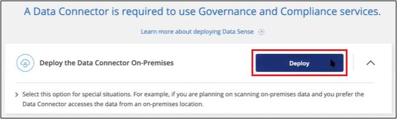

请求文档变更
请求文档变更 在 GitHub 上编辑
在 GitHub 上编辑 提供者指南
提供者指南在内部部署 Cloud Data sense ，而无需访问 Internet
提供者
完成一些步骤，在无法访问 Internet 的内部站点中的主机上部署 Cloud Data sense 。此类安装非常适合您的安全站点。
请注意，您也可以 "在可访问 Internet 的内部站点中部署 Data sense"。
支持的数据源
以这种方式安装（有时称为 " 脱机 " 或 " 暗 " 站点）时， Data sense 只能扫描内部站点本地数据源中的数据。此时， Data sense 可以扫描以下本地数据源：
-
内部部署 ONTAP 系统
-
数据库架构
-
非 NetApp NFS 或 CIFS 文件共享
-
使用简单存储服务（ S3 ）协议的对象存储
如果您需要非常安全的 Cloud Manager 安装，但也希望从 OneDrive 帐户或 SharePoint 帐户扫描本地数据，则可以使用 Data sense 脱机安装程序并提供对一些选定端点的 Internet 访问。请参见 SharePoint 和 OneDrive 的特殊要求 了解详细信息。
当前不支持在非公开站点中部署Data sense时扫描Cloud Volumes ONTAP 、Azure NetApp Files 、FSX for ONTAP 、AWS S3或Google Drive帐户。
限制
大多数 Data sense 功能都适用于部署在无法访问 Internet 的站点上的情况。但是，不支持某些需要访问 Internet 的功能，例如：
-
管理 Microsoft Azure 信息保护（ AIP ）标签
-
在某些关键策略返回结果时向 Cloud Manager 用户发送电子邮件警报
-
为不同用户设置 Cloud Manager 角色（例如，帐户管理员或合规性查看器）
-
使用 Cloud Sync 复制和同步源文件
-
接收用户反馈
-
从 Cloud Manager 自动升级软件
Cloud Manager Connector 和 Data sense 都需要定期手动升级才能启用新功能。您可以在 Data sense UI 页面底部看到 Data sense 版本。检查 "《云数据感知发行说明》" 以查看每个版本中的新功能以及是否需要这些功能。然后，您可以按照以下步骤进行操作 升级 Data sense 软件。
快速入门
按照以下步骤快速入门，或者向下滚动到其余部分以了解完整详细信息。
如果您尚未在脱机内部站点上安装 Connector ， "部署连接器" 现在在 Linux 主机上。
从 NetApp 支持站点下载 Cloud Data sense 软件，并将安装程序文件复制到您计划使用的 Linux 主机。然后启动安装向导并按照提示部署 Cloud Data sense 实例。
Cloud Manager 中 Cloud Data 感知扫描的前 1 TB 数据是免费的。要在此之后继续扫描数据，需要获得 NetApp 的 BYOL 许可证。
安装 Cloud Manager Connector
如果您尚未在脱机内部站点上安装 Cloud Manager Connector ， "部署连接器" 在脱机站点的 Linux 主机上。
准备 Linux 主机系统
数据感知软件必须在满足特定操作系统要求， RAM 要求，软件要求等要求的主机上运行。与其他应用程序共享的主机不支持数据感知 - 此主机必须是专用主机。
-
操作系统：Red Hat Enterprise Linux或CentOS 8.0、8.1或8.4版
-
可以使用7.8或7.9版、但Linux内核版本必须为4.14或更高版本
-
操作系统必须能够安装 Docker 引擎（例如，根据需要禁用 firewalld 服务）
-
-
磁盘： SSD ， 500 GiB 可在 / ，或上使用
-
/opt 上提供 100 GiB
-
/var 上提供 400 GiB
-
/tmp 上 5 GiB
-
-
RAM ： 64 GB （必须在主机上禁用交换内存）
-
CPU ： 16 个核心
请注意，您可以在 CPU 较少且 RAM 较少的系统上部署 Data sense ，但使用这些系统时会有一些限制。请参见 "使用较小的实例类型" 了解详细信息。
在安装 Data sense 之前，必须在主机上安装以下软件：
验证 Cloud Manager 和 Data sense 前提条件
在部署 Cloud Data sense 之前，请查看以下前提条件，以确保您的配置受支持。
-
确保 Cloud Manager 有权为 Cloud Data sense 实例部署资源并创建安全组。
-
确保 Cloud Manager Connector 可以访问 Data sense 实例。Connector 的安全组必须允许通过端口 443 与 Data sense 实例之间的入站和出站流量。
通过此连接可以部署 Data sense 实例，并可查看合规性和监管信息。
确保端口 8080 已打开，以便您可以在 Cloud Manager 中查看安装进度。
-
确保您可以保持 Cloud Data sense 正常运行云数据感知实例需要保持运行状态才能持续扫描数据。
-
确保 Web 浏览器连接到 Cloud Data sense启用 Cloud Data sense 后，请确保用户从连接到 Data sense 实例的主机访问 Cloud Manager 界面。
Data sense 实例使用专用 IP 地址来确保索引数据不可供他人访问。因此，用于访问 Cloud Manager 的 Web 浏览器必须连接到该专用 IP 地址。此连接可以来自与 Data sense 实例位于同一网络中的主机。
SharePoint 和 OneDrive 的特殊要求
如果 Cloud Manager 和 Data sense 部署在无法访问 Internet 的站点中，则可以通过为一些选定端点提供 Internet 访问来扫描 SharePoint 和 OneDrive 帐户中的本地文件。
| 端点 | 目的 |
|---|---|
login.microsoft.com \graph.microsoft.com |
与 Microsoft 服务器通信以登录到选定的联机服务。 |
与 Cloud Manager 服务进行通信，其中包括 NetApp 帐户。 |
只有在首次连接到这些外部服务期间，才需要访问 cloudmanager.cloud.netapp.com 。
部署 Data sense
对于典型配置，您将在一个主机系统上安装该软件。 "请在此处查看这些步骤"。
对于需要扫描数 PB 数据的大型配置，您可以使用多个主机来提供额外的处理能力。 "请在此处查看这些步骤"。
典型配置的单主机安装
在脱机环境中的单个内部主机上安装 Data sense 软件时，请按照以下步骤进行操作。
-
在已配置 Internet 的系统上，从下载 Cloud Data sense 软件 "NetApp 支持站点"。您应选择的文件名为 * Datasis-offline-bundle-<version>.tar.gz* 。
-
将安装程序包复制到计划在非公开站点中使用的 Linux 主机。
-
解压缩主机上的安装程序包，例如：
tar -xzf DataSense-offline-bundle-v1.13.1.tar.gz此操作将提取所需的软件和实际安装文件 * cc_onprem_installer_< 版本 >.tar.gz* 。
-
启动 Cloud Manager 并单击 * 数据感知 * 选项卡。
-
单击 * 激活数据感知 * 。

-
单击 * 部署 * 以启动内部部署向导。

-
在 Deploy Data sense on premises 对话框中，复制提供的命令并将其粘贴到文本文件中，以便稍后使用，然后单击 * 关闭 * 。例如：
sudo ./install.sh -a 12345 -c 27ag75 -t 2198qq -dredestinm -
解压缩主机上的安装文件，例如：
tar -xzf cc_onprem_installer_1.13.1.tar.gz -
安装程序提示时，您可以在一系列提示中输入所需值，也可以将所需参数作为命令行参数提供给安装程序：
根据提示输入参数： 输入完整命令： -
粘贴您从第 7 步复制的信息：
sUdo ./install.sh -a <account_id> -c <agent_id> -t <token> -drestsite -
输入 Data sense 主机的 IP 地址或主机名，以便 Connector 实例可以访问它。
-
输入 Cloud Manager Connector 主机的 IP 地址或主机名，以便 Data sense 实例可以访问它。
或者，您也可以预先创建整个命令，并提供必要的主机参数：
sUdo ./install.sh -a <account_id> -c <agent_id> -t <token> -host <ds_host> -manager-host <cm_host> -no-proxy -drestrsite变量值：
-
account_id = NetApp 帐户 ID
-
agent_id = 连接器 ID
-
token = JWT 用户令牌
-
ds_host = Data sense Linux 系统的 IP 地址或主机名。
-
cm_host = Cloud Manager Connector 系统的 IP 地址或主机名。
-
Data sense 安装程序将安装软件包，注册安装并安装 Data sense 。安装可能需要 10 到 20 分钟。
如果主机和 Connector 实例之间通过端口 8080 建立连接，则您将在 Cloud Manager 的 Data sense 选项卡中看到安装进度。
在配置页面中，您可以选择本地 "内部 ONTAP 集群" 和 "数据库" 要扫描的。
您也可以 "为 Cloud Data sense 设置 BYOL 许可" 目前的数字电子钱包页面。在数据量超过 1 TB 之前，不会向您收取任何费用。
适用于大型配置的多主机安装
对于需要扫描数 PB 数据的大型配置，您可以使用多个主机来提供额外的处理能力。使用多个主机系统时，主系统称为 Manager node ，提供额外处理能力的其他系统称为 扫描 程序 nodes 。
在脱机环境中的多个内部主机上安装 Data sense 软件时，请按照以下步骤进行操作。
-
验证管理器和扫描程序节点的所有 Linux 系统是否都符合 主机要求。
-
确认已安装两个必备软件包（ Docker 引擎和 Python 3 ）。
-
确保您在 Linux 系统上具有 root 权限。
-
验证脱机环境是否满足要求 权限和连接。
-
您必须具有计划使用的扫描程序节点主机的 IP 地址。
-
必须在所有主机上启用以下端口和协议：
Port 协议 Description 2377
TCP
集群管理通信
7946
TCP ， UDP
节点间通信
4789
UDP
覆盖网络流量
50
电子服务
加密的 IPsec 覆盖网络（ ESP ）流量
111.
TCP ， UDP
用于在主机之间共享文件的 NFS 服务器（需要从每个扫描程序节点到管理器节点）
2049.
TCP ， UDP
用于在主机之间共享文件的 NFS 服务器（需要从每个扫描程序节点到管理器节点）
-
按照中的步骤 1 至 8 进行操作 "单主机安装" 在管理器节点上。
-
如步骤 9 所示，在安装程序提示时，您可以在一系列提示中输入所需值，也可以将所需参数作为命令行参数提供给安装程序。
除了可用于单主机安装的变量之外，还会使用一个新选项 * -n <node_IP>* 来指定扫描程序节点的 IP 地址。多个节点 IP 以逗号分隔。
例如，此命令会添加 3 个扫描程序节点：
sudo ./install.sh -a <account_id> -c <agent_id> -t <token> -host <ds_host> -manager-host <cm_host> * -n <node_ip1> ， <node_ip2> ， <node_ip3>* —无代理站点 -
在管理器节点安装完成之前，将显示一个对话框，其中显示了扫描程序节点所需的安装命令。复制命令并将其保存在文本文件中。例如：
sudo ./node_install.sh -m 10.11.12.13 -t ABCDEF-1-3u69m1-1s35212 -
在 * 每个 * 扫描程序节点主机上：
-
将 Data sense 安装程序文件（ * cc_onprem_installer_<version>.tar.gz* ）复制到主机。
-
解压缩安装程序文件。
-
粘贴并运行在步骤 3 中复制的命令。
在所有扫描程序节点上完成安装且这些节点已加入管理器节点后，管理器节点安装也会完成。
-
Cloud Data sense 安装程序将完成软件包安装，并注册安装。安装可能需要 15 到 25 分钟。
在配置页面中，您可以选择本地 "内部 ONTAP 集群" 和本地 "数据库" 要扫描的。
您也可以 "为 Cloud Data sense 设置 BYOL 许可" 目前的数字电子钱包页面。在数据量超过 1 TB 之前，不会向您收取任何费用。
升级 Data sense 软件
由于 Data sense 软件会定期更新新功能，因此您应按照例行程序定期检查新版本，以确保您使用的是最新的软件和功能。您需要手动升级 Data sense 软件，因为没有 Internet 连接，无法自动执行升级。
-
数据感知软件一次可升级一个主要版本。例如、如果您安装了1.1.1.x版、则只能升级到1.12.x如果您有几个主要版本，则需要多次升级此软件。
-
确认您的内部连接器软件已升级到最新可用版本。 "请参见 Connector 升级步骤"。
-
在已配置 Internet 的系统上，从下载 Cloud Data sense 软件 "NetApp 支持站点"。您应选择的文件名为 * Datasis-offline-bundle-<version>.tar.gz* 。
-
将软件包复制到非公开站点中安装了 Data sense 的 Linux 主机。
-
解压缩主机上的软件包，例如：
tar -xvf DataSense-offline-bundle-v1.13.1.tar.gz此操作将提取安装文件 * cc_onprem_installer_< 版本 >.tar.gz* 。
-
解压缩主机上的安装文件，例如：
tar -xzf cc_onprem_installer_1.13.1.tar.gz此操作将提取升级脚本 * 启动 _didssite_upgrade.sh* 以及任何所需的第三方软件。
-
在主机上运行升级脚本，例如：
start_darksite_upgrade.sh
Data sense 软件将在主机上进行升级。更新可能需要 5 到 10 分钟。
请注意，如果您在多个主机系统上部署了 Data sense 来扫描非常大的配置，则扫描程序节点不需要升级。
您可以通过检查 Data sense UI 页面底部的版本来验证软件是否已更新。